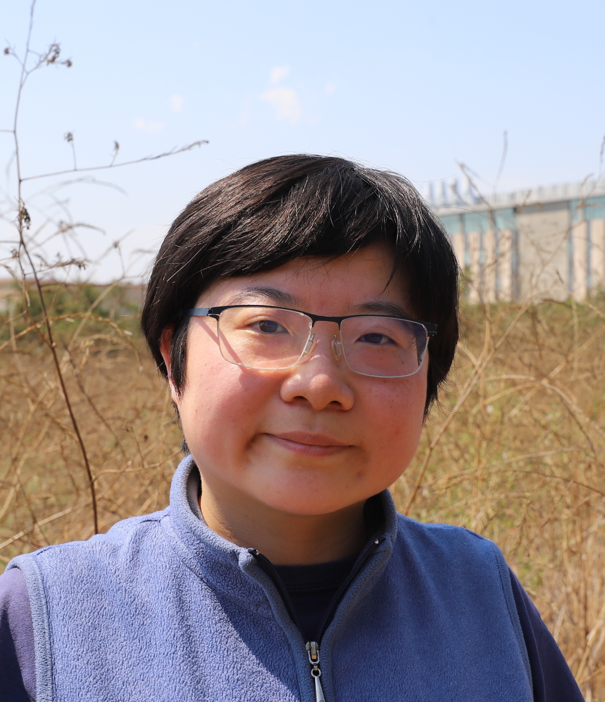

Short Bio
Tianjia (Tina) Liu is an Assistant Professor in the Department of Geography at the University of British Columbia, where she leads the Environmental Modeling, oBservations, and Remote Sensing (EMBRS) Lab. Tina is also a Faculty Associate in the Institute for Resources, Environment, and Sustainability (IRES). Her lab investigates air quality, public health, and climate-related issues with a central focus on fires. Recent research topics include mapping the satellite-derived progression of wildfires using geostationary satellite data, investigating the climate and active fire suppression controls on fire spread, and quantifying the air quality and public health impacts of fires. Broadly, Tina uses a combination of remote sensing, GIS, statistics/machine learning, and atmospheric modeling to understand modern human-fire relationships, the role of fire in the Earth system, and the impacts of extreme events on planetary health. She loves data visualization with geospatial data, such as with Google Earth Engine Apps, and wrangling code to explore all kinds of data from satellites, aircraft, ground monitors, models, and surveys/reports. Prior to joining UBC, Tina was a NOAA Climate & Global Change Postdoctoral Fellow at UC Irvine from 2022-2024; she completed her PhD in Earth and Planetary Sciences at Harvard University in 2022 and her BA in Environmental Science at Columbia University in 2017. In her spare time, Tina enjoys poetry, photography, music soundtracks (e.g., from TV shows, movies, video games), basketball, board games, and crime dramas/docuseries.